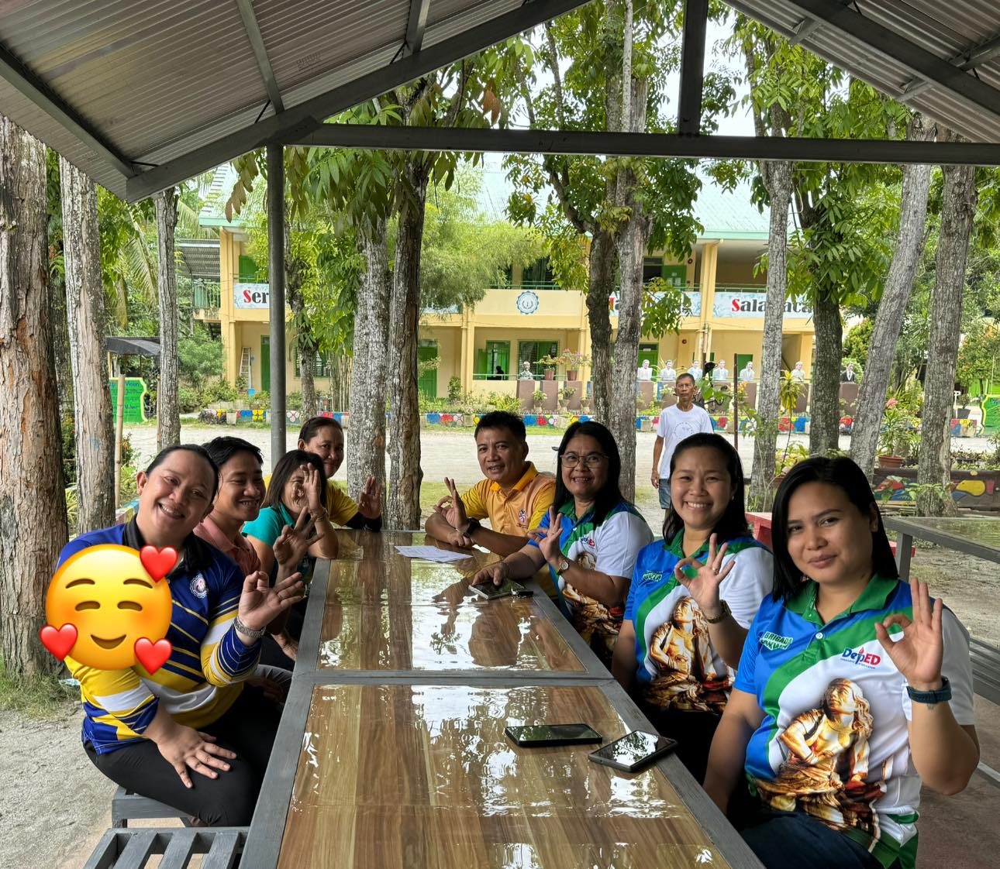
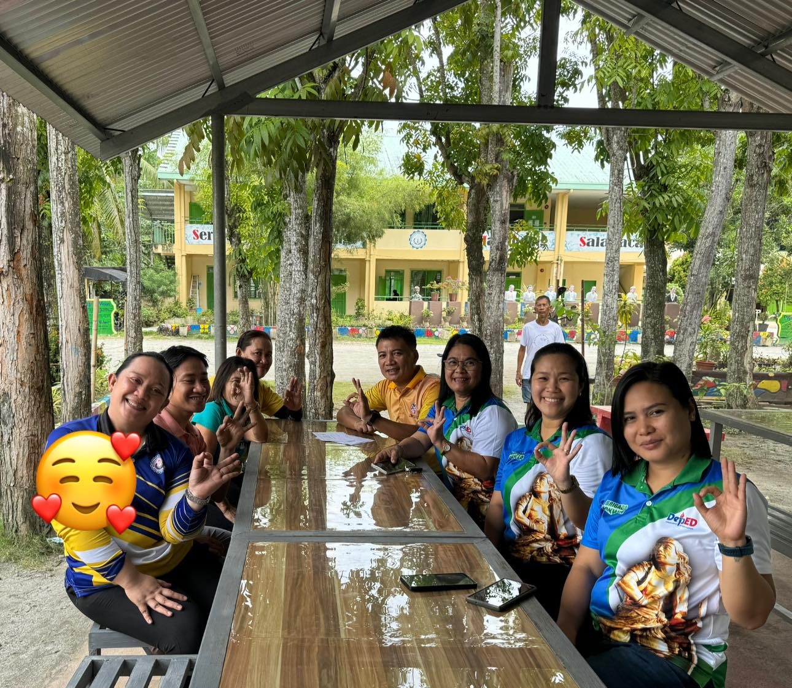

“Nurturing Minds, Shaping the Future.”
At Salabaca National High School, we believe that learning goes beyond the classroom. Our students grow through teamwork, leadership, and active involvement in the community. Together, we build a family that values respect, compassion, and a shared dream for a brighter tomorrow.
Learn More 

Salabaca National High School is more than just a place of learning — it’s a home where students grow, dream, and discover their purpose. As a proud public high school, we aim to build a strong community where every learner is encouraged to develop both skills and character through teamwork, respect, and compassion.
To provide quality and inclusive education that empowers every learner to reach their full potential. We strive to create a caring environment where students are guided to become responsible, respectful, and value-driven citizens ready to contribute to their community and the nation.
A community of passionate learners equipped with knowledge, skills, and values — ready to face the challenges of the future. Salabaca National High School envisions graduates who uphold integrity, creativity, and excellence in all aspects of life.
At Salabaca National High School, we offer engaging programs designed to help every learner discover their passion, develop essential life skills, and grow with purpose and integrity.
Hands-on training in culinary arts and food preparation. Students learn kitchen safety, nutrition, and creativity in meal presentation to prepare for future careers in hospitality and food services.
Empowering students with essential computer skills, digital literacy, and technical knowledge to thrive in today’s technology-driven world.
Develops critical thinking, communication, and empathy — preparing students for roles in education, social work, public service, and leadership.
Enrollment is now open! Please visit the to enroll.
Posted: October 20, 2025Join us in celebrating the hard work and achievements of our students this coming March 15, 2026.
Posted: October 5, 2025Have questions? Reach out to us!
Address: Salabaca Esperanza Sultan Kudarat
Email: salabacahs@email.com
Facebook Salabaca National High School